Leksiya 9
Xatolarni qayta ishlash, try/except, logging, debugging
Leksiya rejasi
| Bo'lim | Mavzu | Nimani o'rganamiz |
|---|---|---|
| A | Kontekst va motivatsiya | Bu nima uchun kerakligini tushunish |
| B | Exception asoslari | Xatolarni o'qish, try/except orqali ushlash |
| C | try/except chuqurroq | else, finally, odatdagi tuzoqlar |
| D | raise | Biznes qoidalari bo'yicha o'z exception'larini chiqarish |
| E | Kontekst menejerlari (with) | Resurslar bilan xavfsiz ishlash |
| F | logging moduli | print() o'rniga normal loglar yozish |
| G | Yakuniy amaliyot | Hammasini real masalada birlashtirish |
Konsepsiya
| Daraja | Vosita | Nimani himoya qiladi |
|---|---|---|
| 1 | if / raise | Kiruvchi argumentlar. Axlatni darhol bloklaymiz |
| 2 | try / except | Tashqi resurslar, tarmoq, I/O, parsing |
| 3 | with / contextmanager | Resurslar: fayllar, MB, loklar |
| 4 | logging | Productionda monitoring va audit |
Tamoyil: xato qanchalik erta ushlansa, uni tuzatish shunchalik arzon bo'ladi. Real tizimda barcha darajalar birgalikda ishlaydi.
Kontekst
Juma, 18:32, oylik kuni. Servis Humo orqali pul o'tkazmalarini qayta ishlaydi. Hamkor API'ni yangiladi: JSON javobidagi bitta atributni qayta nomladi.
Kontekst
KeyError'dan outage'gacha kaskadresponse["currency"]'ni o'qiydi. Kalit endi yo'q: KeyError.Bank SLA 99.99% uptime = yiliga maksimum 52 daqiqa to'xtab qolish. Bitta qayta ishlanmagan KeyError yillik limitning yarmini bir kechada yondiradi.
Konsepsiya
Bu yondashuv: kod "hammasi noto'g'ri ketishi mumkin" degan taxmin bilan yoziladi: tarmoq tushadi, MB lag qiladi, hamkor API axlat qaytaradi, kimdir xato yozadi.
Kiruvchi ma'lumotlarga ishonmaymiz.
Yiqilgan resurs jarayonni o'ldirishiga yo'l qo'ymaymiz.
Nima va qachon yiqilganini bilamiz.
7-leksiya bilan bog'liqlik
O'tgan leksiyada biz polimorf shlyuzlar yozgan edik: UzCardGateway, HumoGateway. Duck Typing orqali gateway.process_settlement()'ni chaqiramiz. Bitta xato terish prodni sindiradi.
UzCard o'tdi, Humo yiqildi. Mijozlarning bir qismi oyligini oldi, bir qismi olmadi.
Exception asoslari
Exception: Python amalni bajara olmaganida yuboradigan "nimadir noto'g'ri ketdi" signali. Qayta ishlanmasdan dastur yiqiladi.
Python KeyError obyektini yaratdi, hech kim uni qayta ishlamadi, dastur Traceback bilan yiqildi.
Exception asoslari
Traceback pastdan yuqoriga o'qiladi. Pastki qator: muammoning mohiyati. Yuqoridagi qatorlar: qanday yo'l bilan kelinganligi.
Exception asoslari
| Qadam | Nima qilamiz |
|---|---|
| 1 | Oxirgi qatorni o'qiymiz: KeyError: 'rate', rate kaliti yo'q |
| 2 | Yuqoridagi qatorga qaraymiz: extract_rate, 2-qator, yiqilish o'sha yerda |
| 3 | Kodga boramiz, 2-qatorni tekshiramiz: api_response["data"]["rate"] |
| 4 | api_response ichidagini tekshiramiz: u yerda exchange_rate, biz esa rate'ni qidiramiz |
| 5 | Tayyor: hamkor kalitni qayta nomlagan |
Exception asoslari
try/except bazaviy sintaksisiException'ni ushlash va dastur yiqilishiga yo'l qo'ymaslik uchun.
try xavfli kodni o'rab oladi, except aniq xato turini ushlaydi. Dastur yiqilmaydi.
Exception asoslari · Odatdagi xatolar
KeyError va ValueErrorException asoslari · Odatdagi xatolar
TypeError va AttributeErrorTypeError: "1000000" bu string (sequence), uni float'ga ko'paytirib bo'lmaydi. AttributeError: metod nomida xato terish yoki metod amalga oshirilmagan.
Exception asoslari
Python'da exception'lar oddiy classlar. KeyError LookupError'dan, u esa Exception'dan meros oladi. Har bir except SomeError isinstance() kabi ishlaydi: classning o'zini va uning har qanday avlodini ushlaydi.
Exception asoslari
BaseException'ni ushlamang: u ichida SystemExit va KeyboardInterrupt bor. Aks holda dasturni hatto to'g'ri to'xtatib bo'lmaydi.
Exception asoslari

Exception asoslari
Exception bu oddiy obyekt. Ma'noli loglar yozish uchun uning ichida nima borligini bilish foydali.
type(exc).__name__ monitoring tizimiga ketadi: uning yordamida insidentlar filtrlanadi.
Auditoriyaga savol
[KeyError] ushladik: 'kalit yo'q'[Exception] ushladik: 'kalit yo'q'30 soniya o'ylab ko'ring. Javob keyingi slaydda.
Javob
[Exception] ushladikPython except bloklarini yuqoridan pastga tekshiradi va birinchi mos kelganida to'xtaydi. KeyError bu Exception'ning avlodi, shuning uchun birinchi blok xatoni ushlaydi, ikkinchisi esa endi bajarilmaydi.
Qoida: aniqdan umumiyga. Spetsifik except'lar yuqorida, umumiylari pastda.
try/except chuqurroq
try ichida minimum kodtry ichida kod qancha kam bo'lsa, qayerda yiqilganini shunchalik aniq tushunasiz. Faqat xavfli amallarni o'rab oling.
try/except chuqurroq
except: turli xatolar, turli reaksiyalarHamma narsa uchun bitta except Exception bu barcha vaziyatlar uchun bitta tugma. Granulyar except'lar turlicha reaksiya bildirishga imkon beradi.
| Xato turi | Reaksiya |
|---|---|
Tarmoq tushdi (Timeout) | Bir necha soniyadan keyin retry |
Yaroqsiz ma'lumotlar (ValueError) | 422 kod bilan rad etish |
| Limit oshirildi | Compliance'ga xabar berish |
| Hamkordan buzilgan JSON | Loglash, PARTNER_ERROR qaytarish |
Python'da Java'dagi kabi exception'larni qayta ishlashga majburlaydigan kompilyator himoya to'ri yo'q. Buni siz bajarasiz.
try/except chuqurroq
Auditoriyaga savol
process() nima qaytaradi?BLOCKED: antifrod to'g'ri ishladiAPPROVED: antifrod ishlamadi, dastur yiqilmadiNameError bilan yiqiladiJavob
APPROVED, antifrod ishlamadiscor bu xato terish. Python NameError: name 'scor' is not defined tashlaydi.except Exception hammasini ushlaydi, shu jumladan NameError'ni ham.APPROVED qaytaradi. Firibgar tranzaksiyani amalga oshirdi.Bu kodda eng xavfli konstruksiya. Loglashsiz keng except Exception har qanday baglarni, jumladan koddagi xato terishlarni yashiradi.
Qoida: faqat kutgan va qayta ishlay oladigan narsangizni ushlang.
try/except chuqurroq
else bloki: faqat muvaffaqiyatda bajariladiAniq ajratish: "xavfli amal", "xatoni qayta ishlash" va "muvaffaqiyatda kod" turli bloklarda yotadi.
Agar "muvaffaqiyatda kod"'ni try ichiga qo'ysangiz, uning xatolarini ham except ushlaydi va xavfli amal xatolari kabi qayta ishlaydi. Bu loglarda chalkashlik.
try/except chuqurroq
else amaliyotda: COMMIT faqat muvaffaqiyatdatry yozuvni amalga oshiradi, except xatolarni ushlaydi, else tranzaksiyani tasdiqlaydi, finally har qanday holatda ulanishni yopadi.
try/except chuqurroq
else amaliyotda: ishga tushirish va chiqishMuvaffaqiyatda try → else → finally ishlaydi. Xatoda: try → except → finally. finally bloki ikkala holatda ham ishlaydi.
try/except chuqurroq
finally bloki: doim bajariladiResurslarni kafolatli ozod qilish uchun: faylni yopish, lokni olib tashlash, MB bilan ulanishni yopish. finally try ichida return bo'lganda ham ishlaydi.
Lok doim olib tashlanadi. finally'siz bloklash abadiy qolib ketishi mumkin edi.
Auditoriyaga savol
[EXCEPT], keyin [FINALLY] chiqaradi va sokin tugaydi[EXCEPT], [FINALLY] chiqaradi, keyin UnboundLocalError bilan yiqiladi[EXCEPT] chiqaradi, finally'gacha yetmaydiJavob
UnboundLocalErrortry ichida ConnectionRefusedError tashlandi.db_conn = ... qatori bajarilmadi, o'zgaruvchi mavjud emas.except ishladi. finally db_conn.close()'ni chaqirdi.UnboundLocalError tashlaydi.Tuzatish: resursni try'dan OLDIN None bilan initsializatsiya qiling.
raise
raise biznes qoidalarini exception tiliga o'tkazadi. Sintaktik to'g'ri narsa biznes xatosi bo'lishi mumkin: amount = -50000, o'z hisobiga o'tkazish, limit oshishi.
Kontekst menejerlari
Har bir resurs (fayl, ulanish, lok) ishdan keyin yopilishi kerak. Agar ochish va yopish o'rtasida exception sodir bo'lsa, f.close() qatori shunchaki bajarilmaydi.
Bu resurs sizib chiqishi: fayl band, xotira ozod qilinmagan. Minglab so'rovlar bo'lgan serverda bunday sizib chiqishlar to'planib jarayonni yiqitadi.
Kontekst menejerlari
with nimawith Python'ga shunday deydi: "buni och, menga ishlashga ruxsat ber, xato bo'lsa ham buni o'zing yop". try/finally'dan qisqaroq va ishonchliroq.
__enter__ va __exit__ metodlariga ega class with bilan ishlaydi. __exit__ doim, hatto blok ichida exception bo'lganda ham chaqiriladi. Resursni ozod qilish kafolati shundadir.
Kontekst menejerlari
with ichida qanday ishlaydiwith'ga uzatilgan obyekt ikkita metodga ega bo'lishi shart: __enter__ (blokka kirish) va __exit__ (chiqish). Python ularni siz uchun chaqiradi.
with'ning asosiy qiymati: __exit__() doim chaqiriladi. Hatto blok ichida exception bo'lganda ham resurs ozod qilinadi.
Kontekst menejerlari
Bir xil with sintaksisi fayllar, MBlar, bloklashlar, soketlar, vaqtinchalik kataloglar uchun ishlaydi.
Kontekst menejerlari
MB bilan ishlaganda with bir vaqtda ikkita ishni qiladi: tranzaksiyani boshqaradi (muvaffaqiyatda commit, xatoda rollback) va oxirida ulanishni yopadi.
Celery fon vazifasida xuddi shunday konstruksiya MBda osilib qolgan tranzaksiyalar va worker vazifalari orasida yopilmagan ulanishlar qolmasligini kafolatlaydi.
Kontekst menejerlari
with va try/except birgalikdawith resurslar uchun, try/except xatolar uchun javobgar. Ko'pincha ular birga ishlatiladi.
Fayl avtomatik yopiladi, hatto exception tashqi try/except bloki tomonidan ushlanganda ham.
Kontekst menejerlari
DBTransaction: avtomatik COMMIT yoki ROLLBACKKontekst menejerlari
@contextmanager: generator orqali menejerDoim butun class kerak emas. Oddiy holatlar uchun contextlib'dan @contextmanager dekoratori bor: yield'gacha bo'lgan kod bu __enter__, yield'dan keyin bu __exit__.
Chiqish tartibi kirish tartibiga teskari. Ichki lok birinchi bo'lib olib tashlanadi.
Kontekst menejerlari
with'siz va with bilanwith'siz | with bilan | |
|---|---|---|
| Resursni yopish | Qo'lda | Avtomatik |
| Xato bo'lganda | Resurs ochiq qoladi | Baribir yopiladi |
| O'qilishi | Ko'proq kod | Toza va qisqaroq |
| Xotira sizib chiqishi | Mumkin | Istisno qilingan |
Yangi bo'lim
logging moduliLoglar: sboydan keyin qoladigan narsa
logging moduli
Logging: dastur ishlashi davomida hodisalarini yozish. Nima sodir bo'ldi, qachon, qaysi serverda, qaysi funksiyada.
Analogiya: samolyotning qora qutisi. Har qanday insidentdan keyin muhandis yozuvni ochib, sbo'ydan oldin tizimda nima sodir bo'lganini ko'radi.
logging moduli
print() yetarli emas| Muammo | Nima uchun muhim |
|---|---|
| Muhimlik darajasi yo'q | Bu DEBUG yoki CRITICAL ekanini tushunmaymiz |
| Vaqt belgisi yo'q | Bu qachon sodir bo'ldi? |
| Fayl va qator yo'q | Bu koddan qayerda? |
| Filtrlab bo'lmaydi | ELK Stack'ga agregatsiya qilinmaydi |
| Rotatsiya qilib bo'lmaydi | Fayl cheksiz o'sib boradi |
| Daraja | Qachon ishlatish |
|---|---|
DEBUG | Otladka uchun batafsil trase. Productionda o'chirilgan |
INFO | Standart hodisalar: tranzaksiya yaratildi, so'rov qabul qilindi |
WARNING | Norasmiy, lekin tizim ishlamoqda: retry #2, sekin so'rov |
ERROR | Bir amal yiqildi, tizim ishlashda davom etmoqda |
CRITICAL | Jiddiy: baza mavjud emas, butun servis xavf ostida |
logging moduli
Uchta qadam: nomi bo'yicha logger olish, darajani belgilash, format bilan handler qo'shish.
Productionda qo'shimcha RotatingFileHandler qo'shiladi: faylga yozadi va hajmi bo'yicha rotatsiya qiladi, log diskni yemasligi uchun.
logging moduli
Daraja hodisaga qarab tanlanadi. Productionda odatda INFO va yuqorisidan filtrlanadi: DEBUG juda shovqinli.
logging moduli
exc_info=True: logga traceback qo'shadiexc_info=True'siz log faqat xato xabarini ko'rsatadi. exc_info=True bilan to'liq traceback qo'shadi. Bu otladka uchun juda muhim.
| Daraja | exc_info=True? |
|---|---|
logger.error() | Doim |
logger.critical() | Doim |
logger.warning() | Ogohlantirish exception bilan bog'liq bo'lsa |
logger.info() | Kerak emas |
logger.debug() | Kerak emas |
logging moduli
except + majburiy loggingBa'zan barcha xatolarni oldindan aytib bo'lmaydi, shunda except Exception ishlatiladi. Lekin bu jim turish uchun bahona emas: hammasini ushlasangiz, hammasini yozishga majbursiz.
| Xabar qismi | Nima beradi |
|---|---|
"Antifrodda kutilmagan xato" | Kontekst: aynan qayerda yiqildi |
{type(e).__name__} | Xato class nomi, Sentry'da filtrlash uchun |
{e} | Xato matni, nima bo'lganini tushunish uchun |
exc_info=True | To'liq traceback, kodda qayerda ekanini tushunish uchun |
Bu graceful degradation deyiladi: servis yiqilmaydi, lekin xato qayd etilgan.
logging moduli
Logsiz xato jim yutib yuborilgan. Servis "ishlashda" davom etadi, biznes mantiq noto'g'ri javob beradi, ma'lumotlar buziladi. Bu himoya emas, dalillarni yashirish.
Yakunlar
| Konsepsiya | Asosiy xulosa |
|---|---|
| Traceback'ni o'qish | Pastdan yuqoriga: tur, joy, yo'l |
| Exception ierarxiyasi | Bu OOP: aniq except'lar yuqorida, umumiy pastda |
try / except / else / finally | try'da minimum kod; else muvaffaqiyatda; finally doim |
Blanket except | Loglashsiz except Exception = jim o'lim |
UnboundLocalError | Resurslarni try'dan oldin None qiling |
raise | Biznes qoidalarini exception tiliga o'tkazamiz |
with / contextmanager | Resurslarni kafolatli ozod qilish |
logging | 5 daraja, exc_info=True, tushunarli xabar formati |
Yakuniy masala
Berilgan: to'lovlar ro'yxati. Bir qismida buzilgan maydonlar, bir qismi biznes qoidalarini buzadi, qabul qiluvchilar orasida sanksiyali bor. Masala: protsessor har qanday kirishda yiqilmaydi, xatolarni uchta toifa bo'yicha sanaydi.
Yakuniy masala
Toifalar bo'yicha uchta xato class'i. Bitta validator: yo OK, yo kerakli turdagi raise.
Yakuniy masala
Bitta try/except uchta tarmoq bilan. Har bir xato turi o'z hisoblagichiga va o'z log darajasiga ketadi. Dastur hech qanday holatda yiqilmaydi.
Materiallar
15 ta topshiriq va "To'lov protsessori" yakuniy masalasi. Jupyter, VS Code yoki Google Colab'da ochiladi.